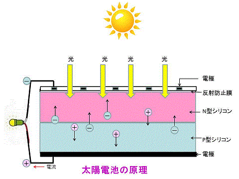
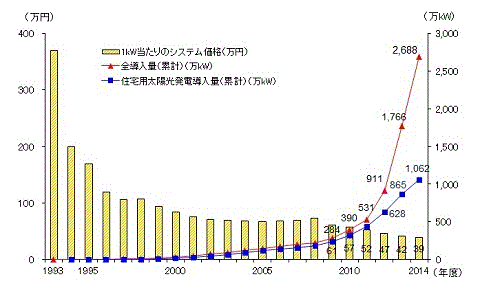
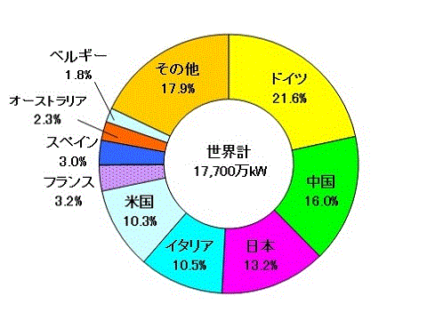
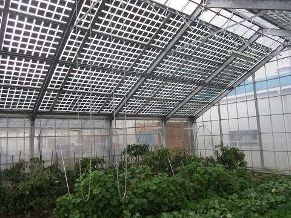

太陽電池に光があたると、プラスとマイナスを持った粒子（正孔と電子）が生まれ、マイナスの電気はN型シリコンの方へ、プラスの電気はP型シリコンの方へ集まります。その結果、電極に電球などをつなぐと電流が流れます。これが太陽電池の原理です。
| 種 類 | 概 要 |
|---|---|
| 多結晶シリコン | 現在の太陽電池の主流。多くの結晶でできたシリコン基盤を使ったもの。 |
| 単結晶シリコン | 単結晶のシリコン基盤を使ったもの。多結晶より高価だが、性能や信頼性に優れる。 |
| 薄膜系シリコン | アモルファス（非晶質）シリコンを使ったもので、シリコン層の厚みを薄くできる。電卓などの電源に利用されている。 |
| CIGS系 | 銅(Cu)、インジウム(In)、ガリウム(Ga)、セレン(Se)の４つの元素の化合物による半導体。高効率が期待される。 |
| CdTe系 | カドミウム(Cd)とテルル(Te)を使うもので、製造時のエネルギーが小さく、低コストでもある。 |
| 色素増感型 | 色素を吸着させた二酸化チタンを電極ではさんだもの。新しいタイプの太陽電池。 |
| 有機半導体 | 有機物を含む固体の半導体膜を使う。常温で塗布するだけで製造できるなど、コストダウンに期待がかかる。 |
太陽電池にはこれら以外にも研究・開発が進められており、複数の種類を組み合わせて、異なる波長の光を余さず利用して効率を上げる試みも行われています。（国立環境研究所）

日本における導入量は、近年着実に伸びており、2014年度末累積で2,688万kWに達しました。企業による技術開発や、国内で堅調に太陽光発電の導入が進んだことにより、太陽光発電設備のコストも着実に低下しています。
（エネルギー白書2016 [出典：経済産業省資源エネルギー庁資料及び太陽光発電普及拡大センター資料] ）

世界的に見ると、日本は2004年末まで世界最大の太陽光発電導入国でしたが、ドイツの導入量が急速に増加した結果、2005年にはドイツに次いで世界第2位となりました。IEA-PVPSによると、2014年末時点では、日本はドイツ、中国に次ぐ世界第3位の累積導入量となっています。
（エネルギー白書2016 [出典：IEA Photovoltaic Power Systems Programme「Trends 2015 in Photovoltaic Applications」] ）

ソーラーシェアリングとは、農地に支柱を立てて上部空間に太陽光発電設備等の発電設備を設置し、農業と発電事業を同時に行うことをいう。農地の有効活用の一つとして提案されている。